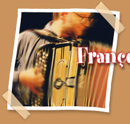
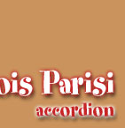

|  |  | |
| Accordion player by birth, this pure Parisian from Sicily, develops, along with tomato sauce expertise, an early passion for jazz |
||
|
harmony, the composition of dizzying waltzes and dazzling improvisations. • Succeeded his teacher Roger Damin in leading the class of accordion in Villejuif where he received the prize of excellency. • Takes part in the recording of three albums “Paris Musette” then in the international tours that follow. • Collaborations with Luciano Pavarotti, Michel Legrand, Marcel Azzola, Francis Lemarque, Guy Béart, Daniel Colin, Dominique Pifarély… |
||
|
|
||